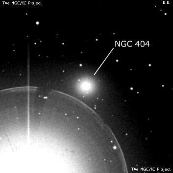

Error 404: Webpage not found!

You've landed on Mirach's Ghost instead
Either you've stumbled on a webpage that has moved or gone away, or typed an incorrect address.
Sometimes searching the web is like star-hopping in the milky way...